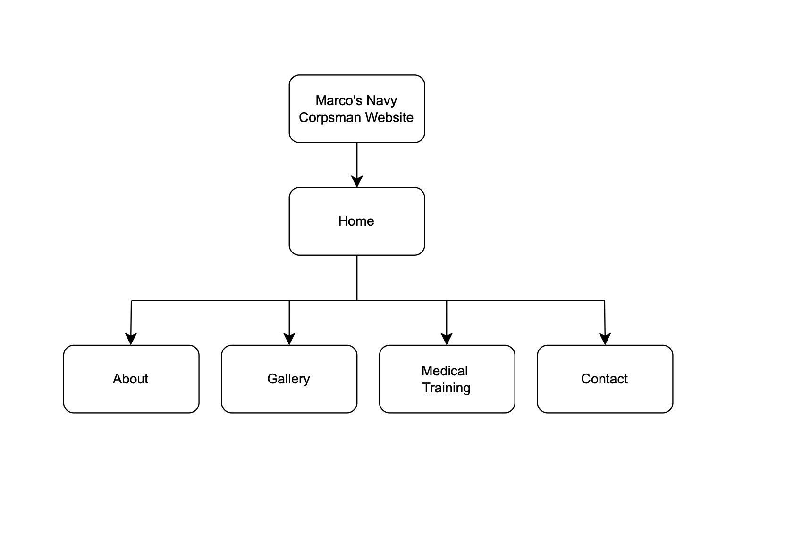
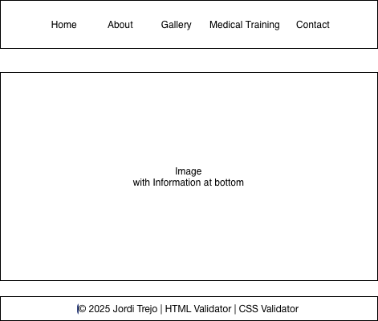

This website is created for my client, Marco, who serves as a U.S. Navy Corpsman.
The purpose of this project is to highlight his career, training, and contributions
to the Navy and Marine Corps. The website provides an informative and professional
look into the duties and responsibilities of a Corpsman through five main sections:
Home, About, Gallery, Medical Training, and Contact.
Intended Users:
The intended users of this site include friends and family members,
students interested in military medicine, and members of the general public
who want to learn more about Navy Corpsmen and their essential role.
Overview of the Content:
The website includes detailed sections introducing Marco’s background and
responsibilities, a gallery with service photos, an explanation of Corpsman
medical training, and a contact form to connect with him or express appreciation.
Client Information
Name: Marco [Private]
Organization: United States Navy
Email: [Private]
Phone: [Private]
Site Map
The site map below displays all pages included in the project and shows how
they are connected through the main navigation menu.

Site Map displaying the website’s page structure and navigation links.
The navigation bar connects all major pages: Home, About, Gallery, Medical Training, and Contact.
Each page can be accessed directly from any other page through the navigation menu.
Wireframe
This is the initial wireframe used when planning the site layout and structure.

Wireframe outlining the layout of the website before development.
Page Design
1. Home Page (index.html)
Purpose: To introduce visitors to Marco’s Navy Corpsman Website and explain the medical team’s mission within the U.S. Navy and Marine Corps.
Audience: General visitors, friends and family, students, and military supporters.
Type of Content: Hero image, introductory paragraph, and overview of the site’s purpose.
Data Fields: None.
Links: Navigation bar links to About, Gallery, Medical Training, and Contact pages.
Notes: Includes a large image and short paragraph describing the Corpsmen’s mission.
2. About Page (about.html)
Purpose: To provide detailed background information about HM3 Marco Bruno.
Audience: General public and students interested in Navy medicine.
Type of Content: Biography, assignment history, and achievements.
Notes: Highlights training 350+ Marines in TCCC and over 1,250 hours of field care.
3. Gallery Page (gallery.html)
Purpose: To display images of Marco and his squad.
Audience: Friends, family, and military supporters.
Type of Content: Photo gallery with images and animations.
Notes: Uses CSS hover effects and future lightbox JS planned.
4. Medical Training Page (medical.html)
Purpose: To explain Navy Corpsman training programs.
Audience: Visitors exploring medical military careers.
Type of Content: Informational text and external Navy link.
Notes: Includes AJAX button to load extra training details.
5. Contact Page (contact.html)
Purpose: To allow visitors to send messages to Marco.
Audience: General public, friends, family.
Type of Content: Contact form with JavaScript validation.
Notes: Form requires Name, Email, and Message before submission.
Dynamic Functionality
Description:
The website features JavaScript interactions including a dynamic contact form with validation, a responsive gallery with hover animations, and AJAX content loading on the Medical page for expanded training details.
Purpose:
These features make the site interactive and engaging while improving usability and user experience.